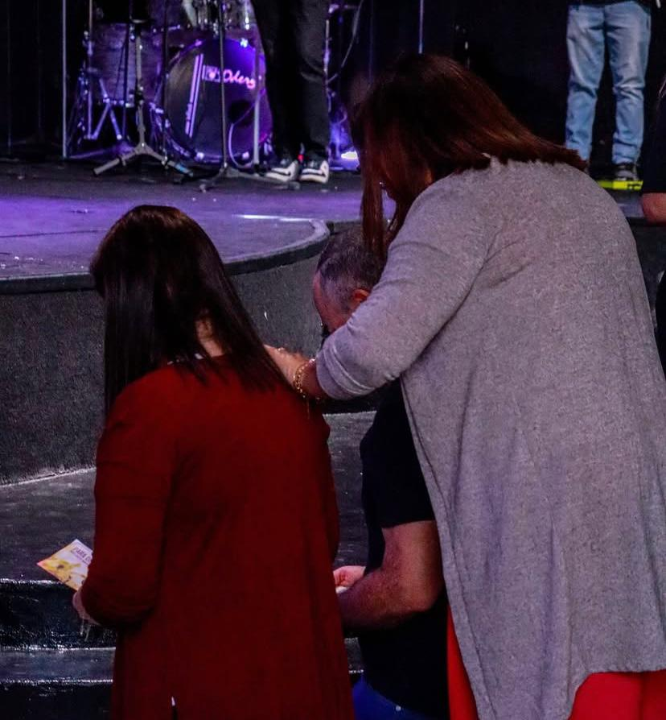
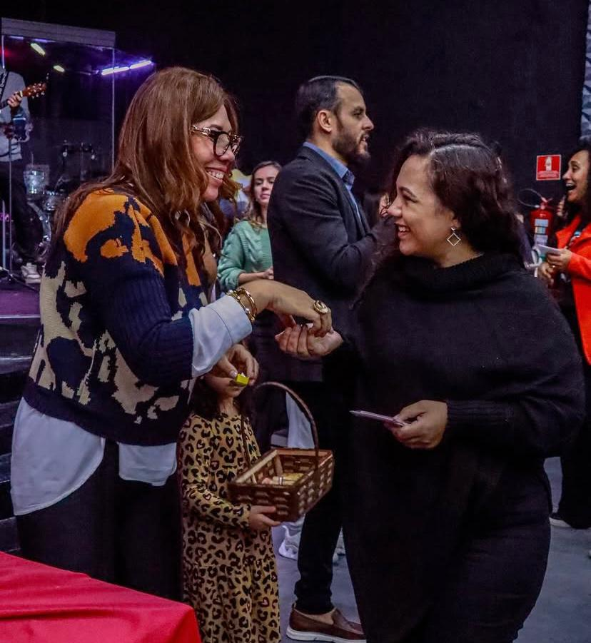
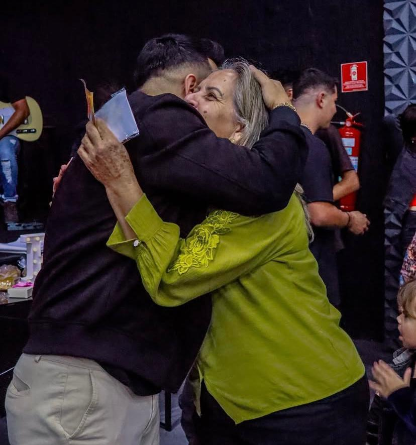

Quando doamos dízimos e ofertamos as bênçãos que Deus nos concedeu, demonstramos nossa adoração, gratidão e devoção a Ele. Agradecemos por semear em tudo o que Deus está fazendo e não deixe de participar desse momento!
OfertarPara você que nunca fez parte dessa Jornada, queremos te convidar a seguir os passos abaixo e venha se unir a nós.
AG: 1234-5
C/C: 12345-6
AG: 1234-5
C/C: 12345-6
AG: 1234-5
C/C: 12345-6
Nosso desejo não é ser uma igreja grande, mas sim relevante. Cremos que é a partir do poder de Deus e através da igreja que podemos alcançar o perdido, cuidar de pessoas e implantar a cultura do Reino aqui na terra. Uma cultura que move a transformação da sociedade e que traz esperança para o mundo.
É na igreja, onde aprendemos sobre ser relevantes e entendemos sobre amar e servir a Deus e às pessoas. É também na Casa de Deus que vidas são transformadas, famílias restauradas, gerações impactadas e pessoas encorajadas. E a IP surgiu exatamente com essa visão de ser uma igreja relevante. Desde o início, sabíamos que daria certo, mas não imaginávamos o impacto que teríamos na sociedade.
Hoje, podemos dizer que somos uma igreja que vive o cristianismo fora das quatro paredes. Uma igreja feita de pessoas para alcançar pessoas. Um local, onde cada um se sente livre e bem recebido. Somos uma igreja que incentiva cada membro a viver amando a Deus e servindo ao próximo. Somos felizes ao ver o que Jesus tem feito através da igreja e nosso desejo é continuar fazendo-O conhecido, abençoar mais vidas e glorificar o Seu nome. E contamos com suas orações, fé, sacrifício e compromisso para juntos realizarmos esse sonho.
